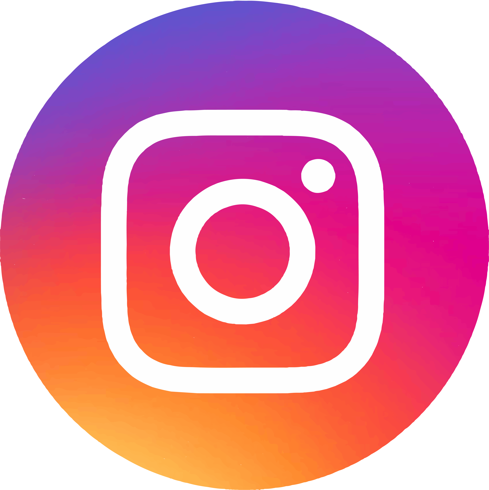
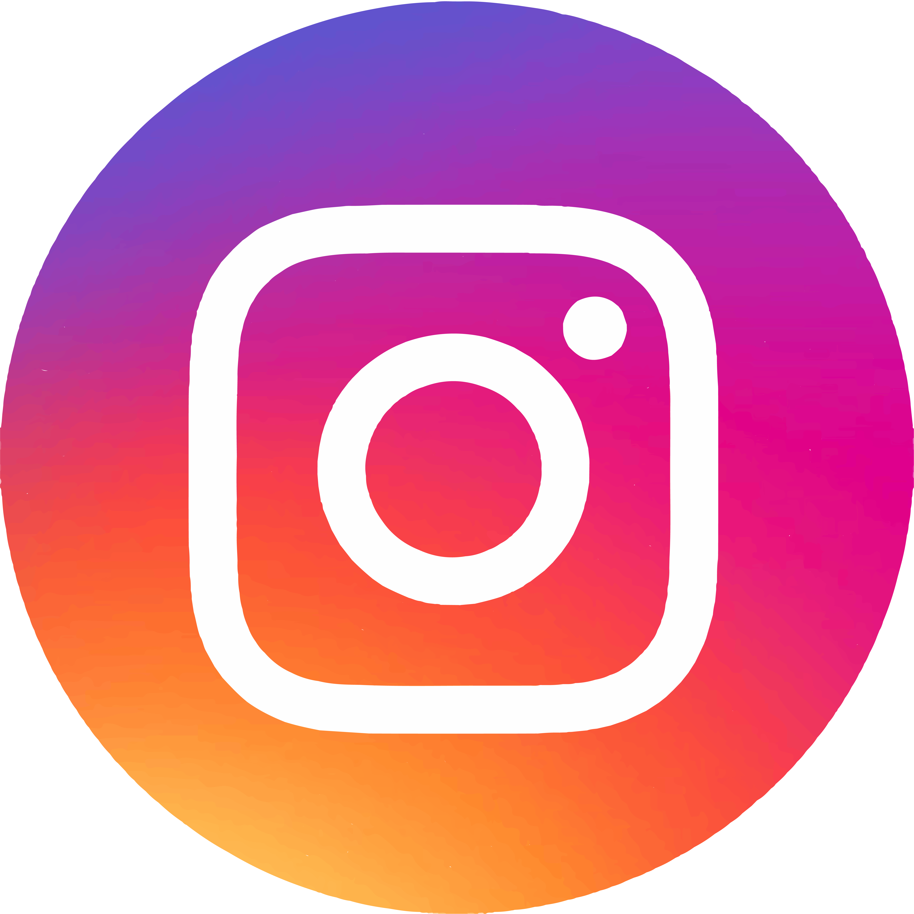

Unfortunately you do not meet the eligibility criteria to donate blood due to one or more factors affecting the quality of your blood to be donated. However, there are still numerous ways to help people in need through the Australian Red Cross Lifeblood. Particularly, you can either choose to donate money and/or raise awareness of the Australian Red Cross Lifeblood through social media
Through donating directly to the Australian Red Cross Lifeblood regularly or as a one-off payment; you are choosing to help thousands of patients across Australia receive the healthcare they need to live and survive. Your charity donation today will mean we can improve the lives of the most vulnerable people, in Australia and across our region. By clicking on the following button, you can choose how much to donate, and how often you would like to send payments
By raising awareness through social media, you can spread the word about the Australian Red Cross Lifeblood and its numerous initiatives to help the most vulnerable people in our society. Particularly, by spreading the word online, we at the ACRL can gain more potential blood donors for people in need. By clicking on one of the social media images below, you will be redirected to your preferred social media website in which you are encouraged to like and share the page. Correspondingly, by clicking on the Facebook and Twitter images, you are given a pre-populated default post that you can share of which can be edited to your preference.

 
